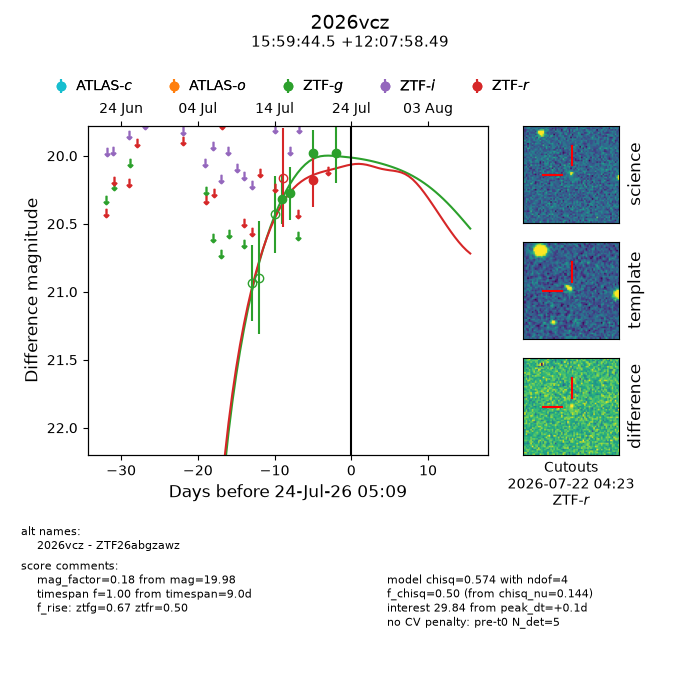
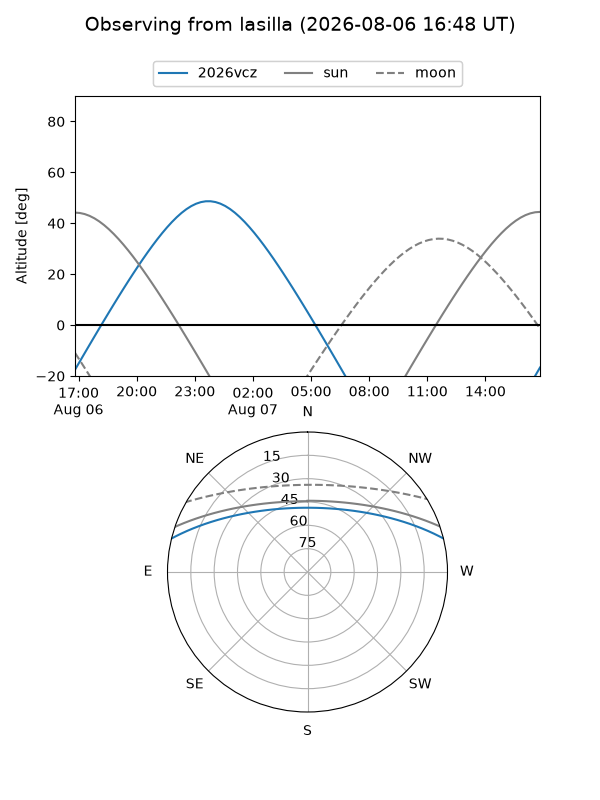
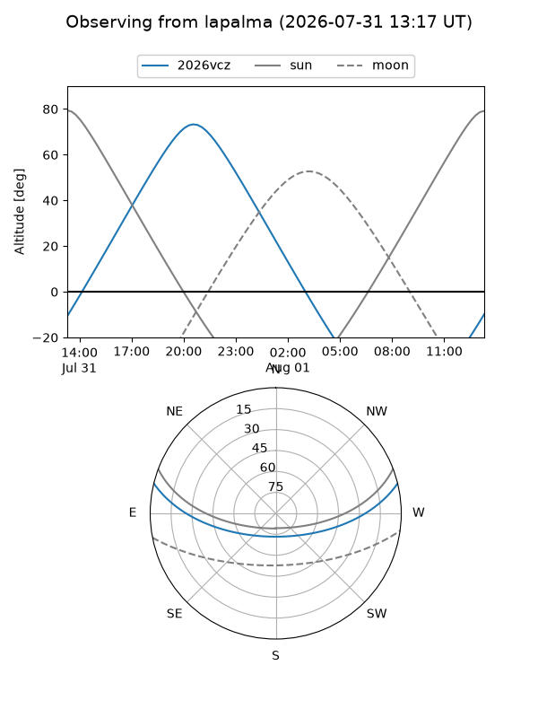
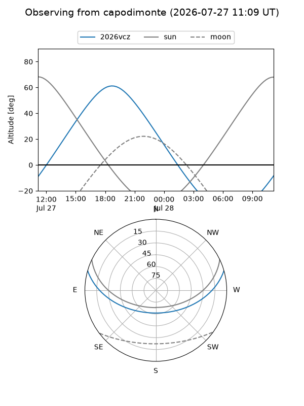
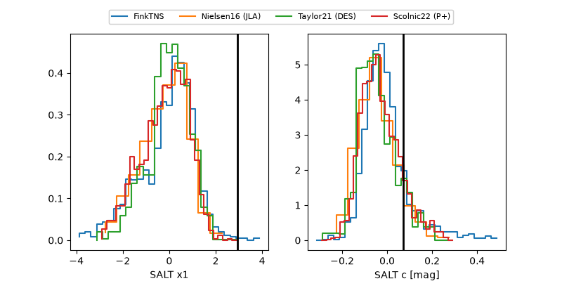

2026vcz
Target 2026vcz at 2026-07-24 05:11
Aliases and brokers:
FINK-ZTF: ztf.fink-portal.org/ZTF26abgzawz
Lasair-ZTF: lasair-ztf.lsst.ac.uk/objects/ZTF26abgzawz
ALeRCE-ZTF: alerce.online/object/ZTF26abgzawz
YSE-PZ: ziggy.ucolick.org/yse/transient_detail/2026vcz
TNS name: wis-tns.org/object/2026vcz
Direct TNS query: direct search
alt names
ZTF26abgzawz (ztf,fink_ztf)
2026vcz (tns,yse)
Coordinates:
equatorial (ra, dec) = 239.9355,+12.13291
equatorial (HMS+DMS) = 15:59:44.51,+12:07:58.49
galactic (l, b) = (23.6857,+43.50410)
Flags:
TNS type: nan
peak dt: +0.1
Photometry:
last ztfg=19.98, ztfr=20.18
4 ztfg, 1 ztfr detections
Lightcurve

Visibility



Additional plots
